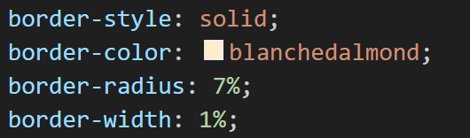
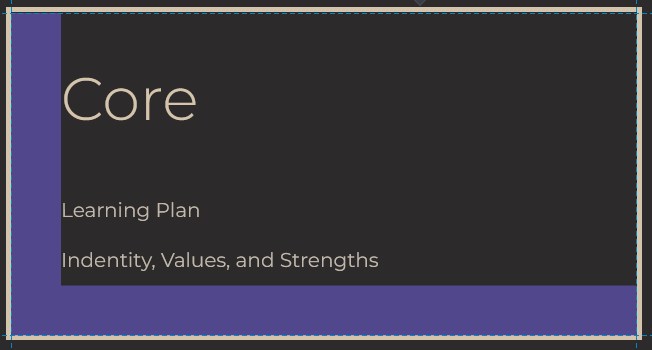
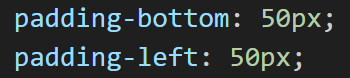
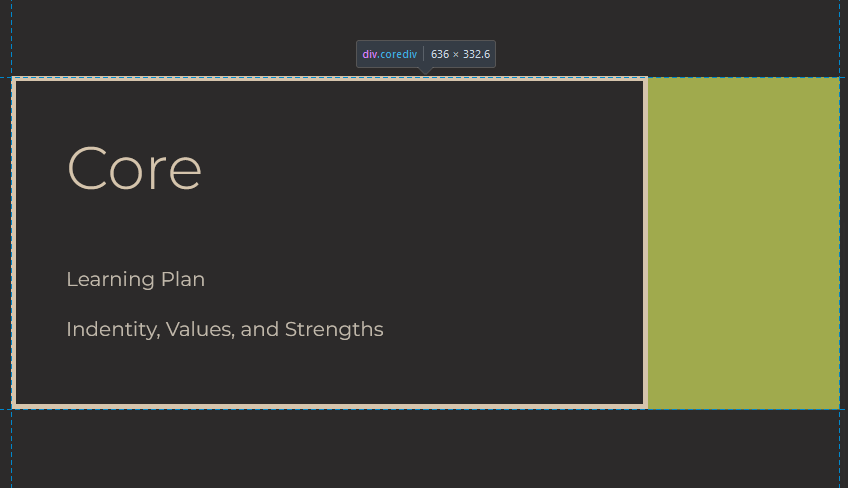
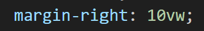

Border, margin, and padding work together in css in order to position and
define content on your page. They can be used either individually or in
combination, however there are a few key differences in both what they do
and how we use them.
Border
Border is the visible border around something on your page e.g. picture
or text. The most common preferences are border width, style, and
colour. A curved border can be made by using border-radius. The
dimensions of each of these commands can be defined using any css
compatible length e.g. percentage, view height, or pixels.

In the above code, we can see that the border width, style, and colour
have been defined, and result in the border we see around the image.
Padding
Padding is the way we control the space between our content and it's
borders. Left, top, right, and bottom padding can be added, as well as
the colour. Just as with borders, padding can be defined using any css
compatible length e.g. percentage, view height, or pixels.


The code shown above creates the selected purple padding we see in the
screenshot of my blog's core link section. As no colour was specified,
the padding is transparent as we can see in the below image.
Margin
Margin is the space around the border of you content, either between the
sides of the page, or between other items. Left, top, right, and bottom
margin can be adjusted, and it is always transparent. Just like in
padding, margin can be defined using any css compatible length e.g.
percentage, view height, or pixels.


The right margin shown in the above code screenshot results in the large
yellow margin seen above. Margin is always transparent, as can be seen
in the final result below.